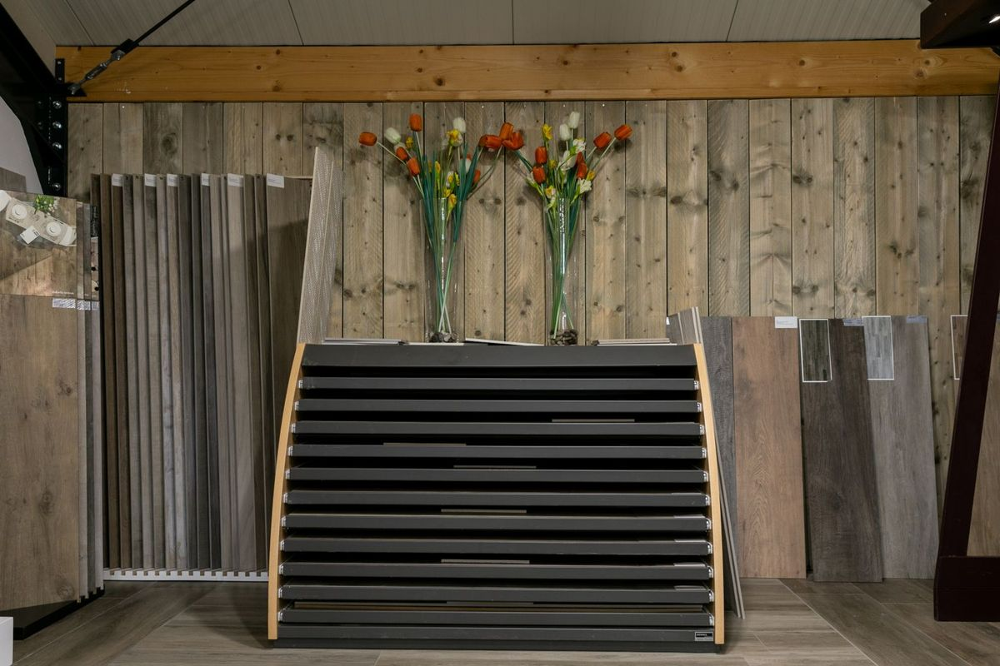
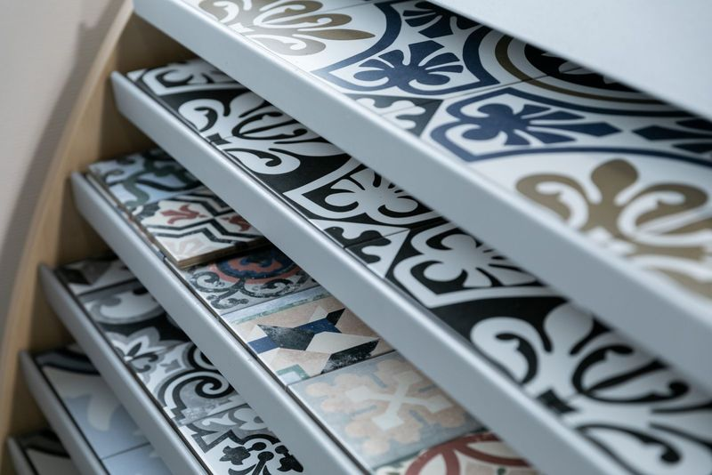
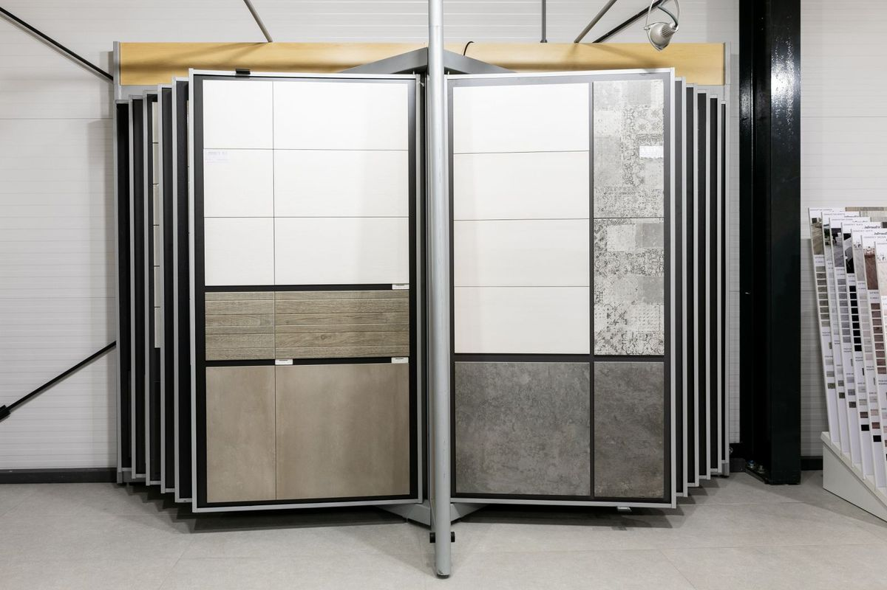
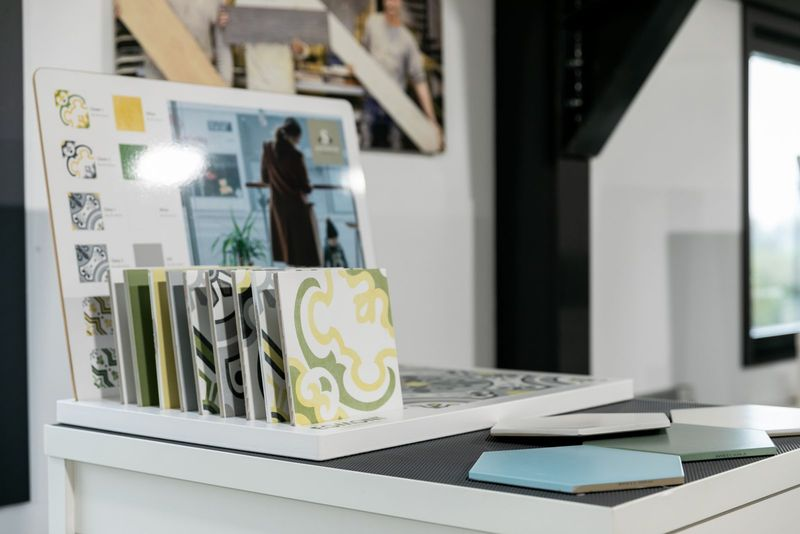
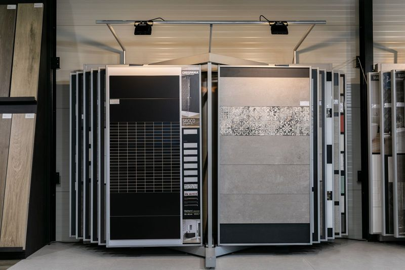
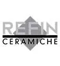
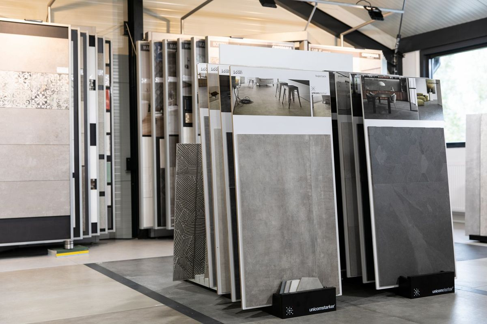
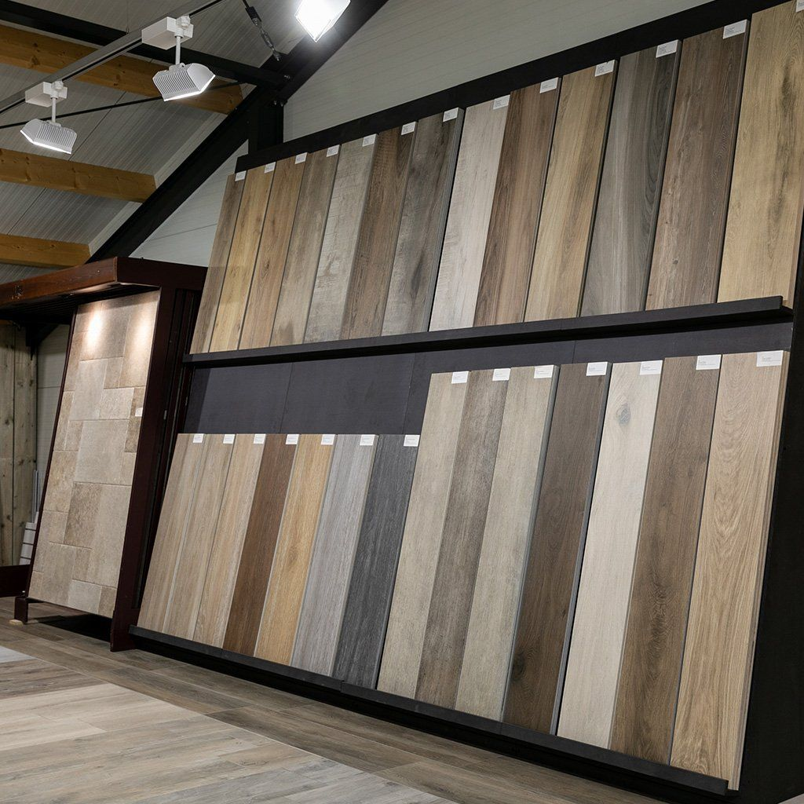
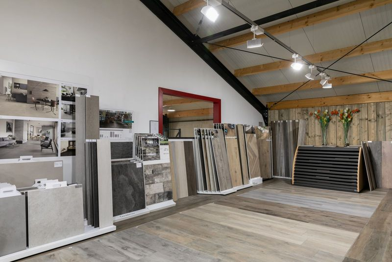
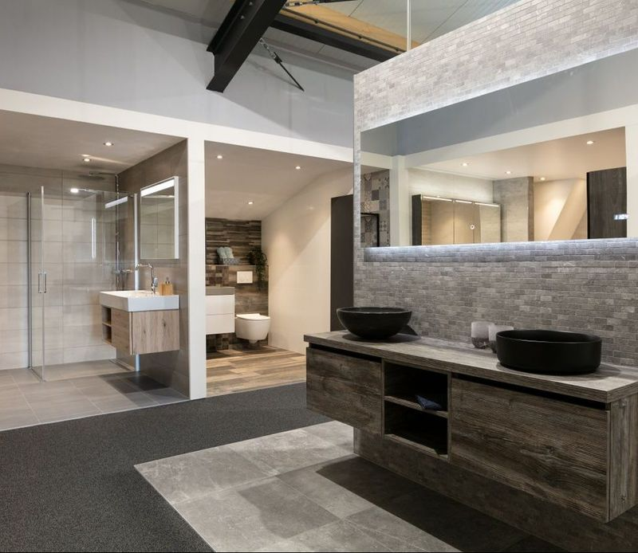

Keramische tegel in keuken
Keramische tegels in de keuken vormen de ideale keuze voor het creëren van een prachtige en functionele keukenruimte. Bij Tegelhandel VSB bieden we een breed assortiment keukentegels in diverse stijlen, formaten en kleuren voor jou of voor jouw klanten.
Het selecteren van de perfecte keramische keukentegels kan een uitdaging zijn, maar onze experts staan klaar om je te helpen bij het vinden van de ideale tegels die passen bij jouw keukenwensen en de gewenste uitstraling van jouw keuken.



Keramische wandtegels keuken
Keramische wandtegels voor je keuken hebben wij bij Tegelhandel VSB in veel verschillende formaten en kleuren. Van een betonlook tegel voor de industriële inrichting, tot aan de houtlook tegel voor een warme landelijke sfeer. De mogelijkheden voor muurtegels voor de keuken zijn eindeloos!
Of je nu op zoek bent naar kleine mozaïektegels of grote rechthoekige keukentegels voor de wand. Je vindt het allemaal in onze tegelshowroom in Lexmond. Onze ervaren tegelexperts laten je graag kennismaken met de keramische tegels voor jouw keukenwand.
Een kleine selectie van alle hooggewaardeerde tegelmerken uit ons assortiment.
-


Keramische vloertegels keuken
Tegelhandel VSB biedt vele soorten keramische vloertegels voor de keuken. Keuken vloertegels zijn er in oneindig veel looks, afmetingen en kleurspelingen. Keuzemogelijkheden genoeg. De meest geliefde tegels voor de keukenvloer zijn op dit moment marmer-, beton of houtlook keramische vloertegels. Toch liever een strakke designtegel? Geen enkel probleem.
Onze showroom laat tal van voorbeelden zien die jouw inspiratie voor vloertegels in de keuken tot leven wekken. Je ziet er tientallen tegelvloeren voor in de keuken. In onze showroom laten de tegelexperts van Tegelhandel VSB je graag kennismaken met onze hoogwaardige keramische keuken tegelvloer collectie.
Keramische keukentegel service
Verrijk je keuken met keramische tegels. Met de verfijnde wand- en vloertegels uit ons assortiment maken we het verschil. Naast levering van keramische tegels voor de keuken, kunnen wij deze ook voor je plaatsen. Onze vakmannen werken iedere keukentegel tot een prachtige vloer of wand.
Bij het opstellen van een offerte kan hier rekening mee worden gehouden. We bespreken samen de benodigde vierkante meters en waar we beginnen met leggen. Wanneer je de tegels voor je keuken door onze ervaren vakmannen laat plaatsen ben je verzekerd van een afgemeten eindresultaat.


Keramische keukentegels zelf ervaren
Voor je keramische tegels afneemt wil je natuurlijk eerst de nodige ideeën opdoen. Wij heten je graag welkom als jouw lokale tegelaanbieder bij Tegelgroothandel VSB. Ontdek onze kunde en deskundigheid en bezichtig onze keramische keukentegels in het echt. In onze showroom laten onze tegelexperts je maar wat graag kennismaken met de verfijnde keramische tegelcollecties van Tegelhandel VSB.
Combineer je nieuwe tegels met
je nieuwe sanitair

Voor je sanitair ben je in de geheel nieuwe sanitair showroom van Pellikaan & Bogaard Sanitair aan het juiste adres. Dankzij onze unieke samenwerking hoef je ook niet veel verder te reizen voor je nieuwe sanitair. Het pand van P&B Sanitair is tegenover ons gevestigd.
Met de laatste trends voor kranen, badkamermeubels en vrijstaande baden kom je snel op nieuwe ideeën. Zij hebben een sterk pakket fabrikanten die staan voor luxe en kwaliteit. Yorick van YWood voorziet hun in maatwerk van massief houten badkamermeubelen en kasten.
Openingstijden
Als je graag persoonlijk advies wil van onze tegelexperts, dan adviseren wij je om een afspraak in te plannen. Dan weet je zeker dat we alle tijd voor je hebben.
Over dit cijfer
Gemiddelde van alle reviews op Google, berekend door Google. Wij kiezen of wijzigen geen reviews en controleren niet zelf of ze echt zijn; daarvoor heeft Google eigen regels.